網站主題: Arch Linux 推薦
(其他頁面計畫較明確，首頁會等大致完成才確定編排)
前面為首頁內容，計畫書內容請點此往下
首頁會有:
-
參考網路做出的meme:
 - 一些對網站簡要的介紹
- Arch有多好多讚
- 網站是用血淚和肝寫成的之類
- 其他一些常見的一些胡扯瞎扯
-
完成頂端(目前只有Home)
- Home
- 文字(?)
- 或其他可能會讓它比較好看的東西
-
左側為站內連結(像頂端一樣固定位置)
- 關於 Linux
- Linux distribution 發行版
- Arch is the best
- BTW I use Arch
- WTF 雜項類
- 連結
- 右側為網站內容變化(視期末時間用一點JavaScript)
- 文字或顏色變化
- 動畫變化? (考慮而已 調數字很麻煩)
計劃書內容
網站目標和動機
暑假嘗試裝Linux在筆電上 這次剛好當期末網站留念
看到MDN網站的Web教學以GitHub作為範例
順便請教了朋友
由於Arch的trademark允許非商用性質的評論及宣傳等
論壇上也有很多桌布標註CC0 不用擔心找不到可以用的資源
內容簡介、項目連結
首頁
基本排版與此計畫書一致
最主要放GIF圖給人個印象和介紹網站
因為怕修改次數太多 首頁和放雜東西那頁沒有明確的計畫
Linux簡介
簡單介紹Linux和GNU等相關項目
可能會放Linus Torvalds的影片
Linux distro
簡介各發行版及package manager
常見Linux和其他種類(例如: Google的Android或微軟WSL)
提到一下Arch Linux 然後去下一頁"Arch is the best"
Arch is best
介紹Arch Linux
ArchWiki和社群的強大
BTW I use Arch
為何會使用Arch
平板能進安裝的只有Ubuntu和Arch
進系統的只有Manjaro
開始在虛擬器和筆電使用Arch
archinstall為我省去的大麻煩
簡單介紹AUR
因為Arch讓我開始學一些bash腳本
作為一個新手想繼續精進的...
其他FOSS
介紹一些想要分享的開源軟體
管它有沒有用 反正我用過覺得好用就對了
Inkscape、OBS、Firefox等
GCC、OpenJDK或.NET學習可能會用到的工具
一些沒用過但公認很威很屌的其他開源軟體(如Blender或O3DE)
其他Arch相關或沒用的雜東西
如果有空想做跟網站無關的東西
沒空就拿來當扣分用的(咳
外部連結
間接用到的參考資料或推薦的網站
網站結構
要拿這頁去改 畫圖有空再說 先commit
進度時間表
每天至少寫30分鐘或commit兩次
其他種類的預定會讓我煩躁